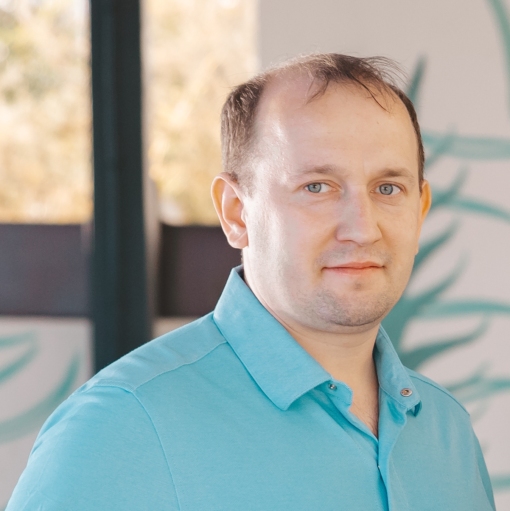

Тест-дизайн
Изучаю классы эквивалентности и анализ граничных значений, составляю чек-листы и тест-кейсы для проверки функциональности.
QA-инженер · ручное тестирование
Сейчас учусь на инженера по тестированию и осваиваю ручной QA. Мне интересно находить дефекты, проверять пользовательские сценарии и помогать делать цифровые продукты надёжнее.

Сейчас изучаю
Осваиваю базовые техники ручного тестирования и применяю их в учебной практике.
Учебная практика
Развиваю системный подход к проверке продукта — от сценария до понятного описания результата.
Изучаю классы эквивалентности и анализ граничных значений, составляю чек-листы и тест-кейсы для проверки функциональности.
Практикую проверку пользовательских сценариев, позитивных и негативных путей, исследую поведение интерфейса.
Учусь оформлять понятные баг-репорты: шаги воспроизведения, фактический и ожидаемый результат, окружение и приоритет.